Ремонт, настройка и регулировка карбюраторов, а также старых систем впрыска 1950–2000 годов. Возвращаем к жизни машины, которые в обычных сервисах «не берут».
Алексей Трофимов работает с топливными системами 33 года, начиная с тех времён, когда эти машины были новыми. Знаем устройство «вживую», а не по форумам.
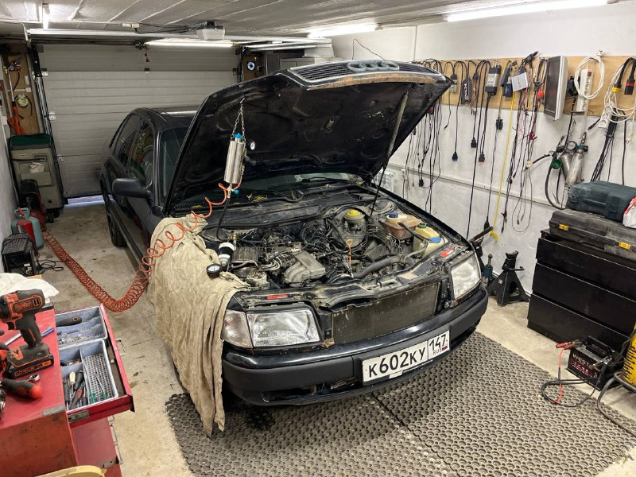
Самые распространённые системы, которые встречаются на классических и youngtimer-автомобилях.
Solex, Weber, Zenith, Stromberg, Pierburg (2E2, 1B3), отечественные ДААЗ/«Озон», К-126.
Bosch с плунжерным ТНВД (Mercedes W111, W113), Kugelfischer (BMW 2002tii, Peugeot).
Первый серийный электронный впрыск Bosch по давлению во впуске: Mercedes, Volvo, VW, Saab.
Механический непрерывный впрыск: Mercedes, Audi, VW Golf GTI, Porsche 911, Volvo.
K-Jetronic с электронной коррекцией: Mercedes W124, W201, R107, W126, Audi 100/200.
Электронный впрыск с флюгерным расходомером: BMW, Opel, Volvo, Porsche 924/944.
С термоанемометрическим ДМРВ: Volvo 240/740/940, Saab, Mercedes, Porsche 928.
Первые системы Bosch с общим управлением впрыском и зажиганием: BMW, VW, Audi, Opel.
Одноточечный впрыск: VW Golf и Passat B3, Audi 80, Seat, Opel.
Система VW: Golf II/III, Passat, Corrado, Transporter T3/T4.
Toyota EFI, Nissan ECCS, Mitsubishi ECI-Multi, Honda PGM-FI.
GM Multec и TBI, Ford EEC-IV, Renix, Fenix, Weber-Marelli, ВАЗ «Январь».
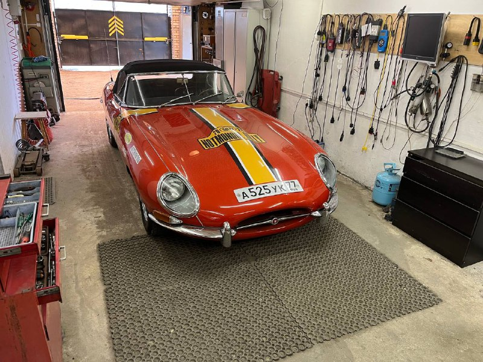
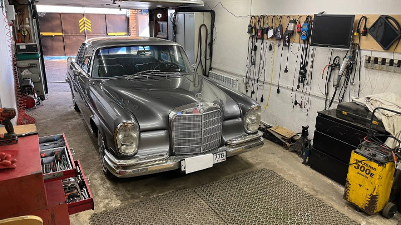
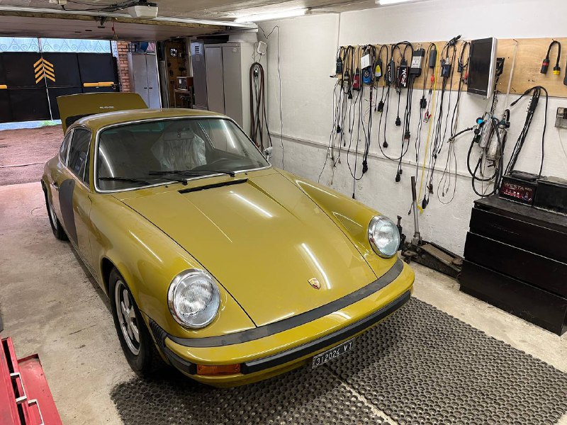
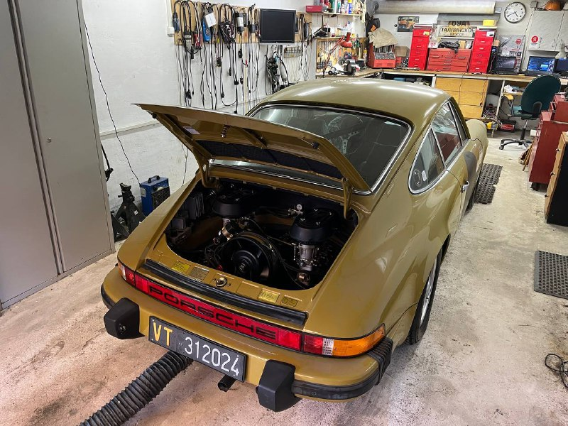
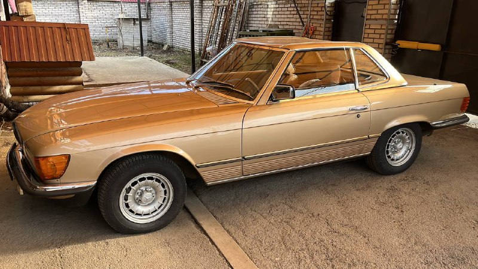
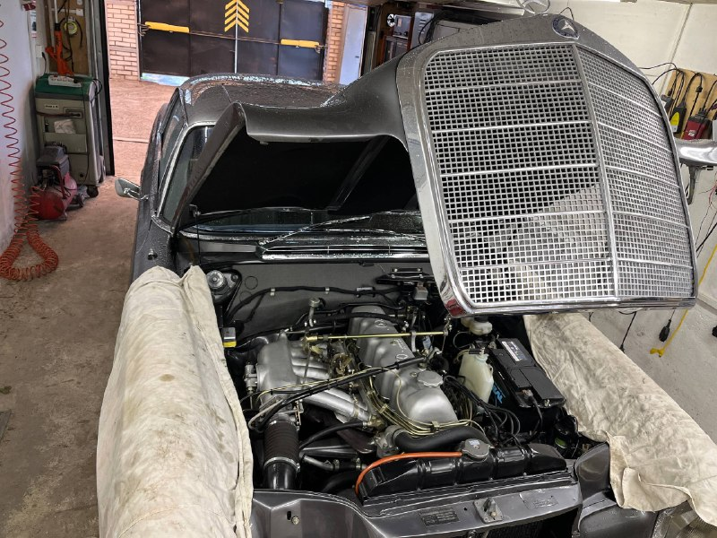
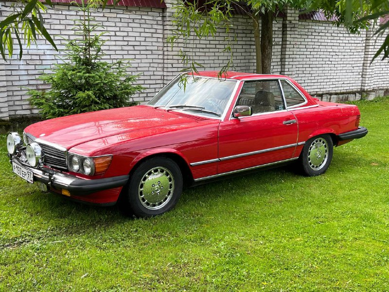
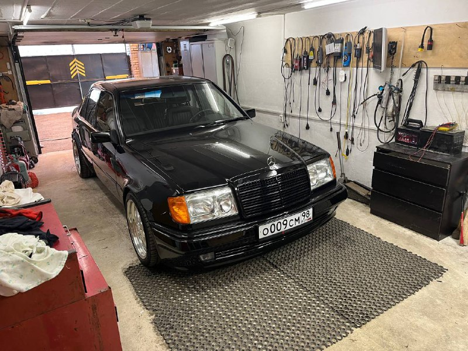
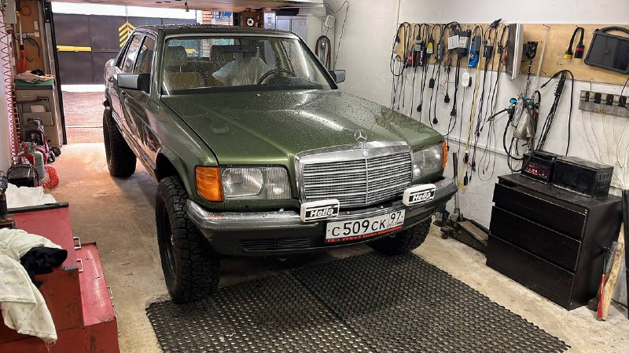
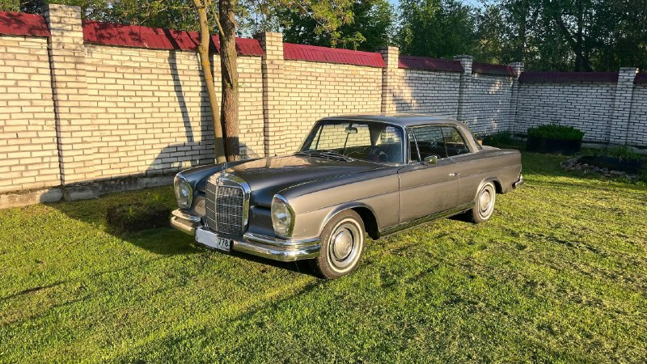
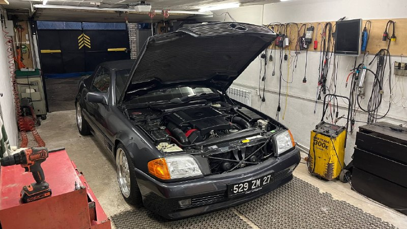
Позвоните или напишите — расскажите о машине и симптомах. Подскажем, что проверить заранее, и договоримся о времени.
Санкт-Петербург, территория Сергиево,
ул. Свердлова, 12, корп. 2